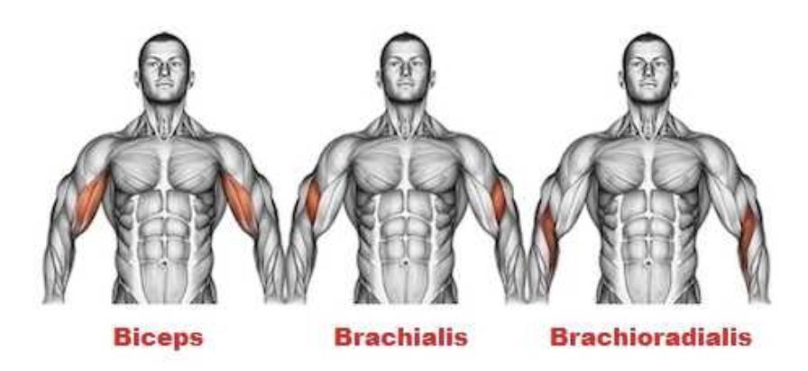
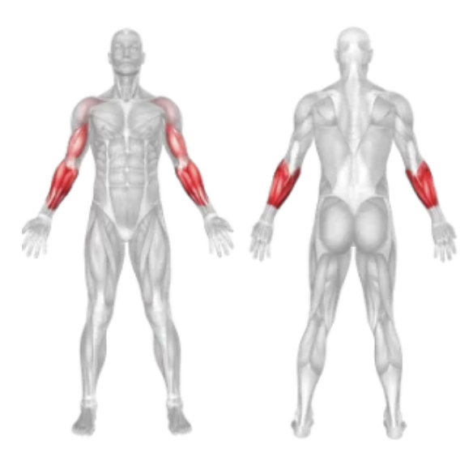
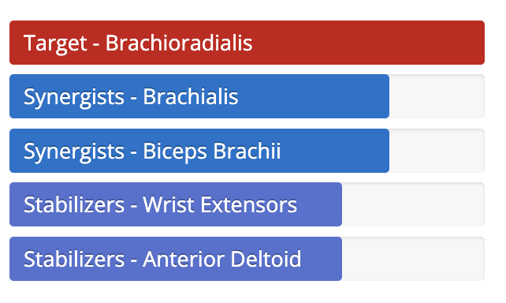

Setup
- Stand upright with your feet shoulder-width apart.
- Grab a barbell using a **pronated grip** (palms facing down), hands about shoulder-width apart.
- Let the bar hang in front of your thighs with your arms fully extended.
- Keep your back straight and core engaged throughout the movement.
Execution
- Curl: Lift the barbell by bending your elbows, keeping your upper arms stationary.
- Top Position: Raise the bar until your forearms are vertical and the bar is near shoulder level.
- Lower: Slowly lower the barbell back to the starting position under control.
- Repeat for the desired number of reps.
Tips for Effectiveness
- Use Light to Moderate Weight: This variation places more stress on the forearms—avoid overloading.
- Control the Movement: Don't swing or use momentum; keep a strict form.
- Neutral Wrists: Don’t let your wrists bend too far—keep them stable throughout.
Benefits of Reverse Grip Barbell Curl
- Forearm Engagement: Great for developing the brachioradialis and forearm muscles.
- Biceps Variation: Works the biceps from a different angle, improving overall arm strength.
- Improves Grip: Enhances grip strength due to the pronated hand position.
Muscles Worked in Reverse Grip Barbell Curl


